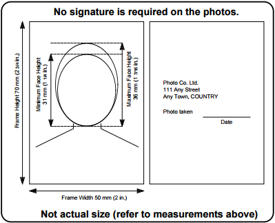

You must submit two (2) identical and unaltered photo prints with each passport application. Third party photo software and digital photo altering applications are not acceptable in the submission of photos to the passport program.
More information is available at Canada.ca/passport.
The photos must:

- Be taken in person by a commercial photographer.
- Be professionally printed on plain, high quality photographic paper (photos printed at home are not acceptable).
- Be clear, sharp and in focus; in colour or black and white.
- Show a neutral facial expression (no smiling, mouth closed) and looking straight at the camera, with eyes open and clearly visible.
- Have uniform lighting— no shadows, glare or flash reflections.
- Show a full front view of the face and top of the shoulders squared to the camera (face and shoulders centered in the photo, head not tilted or turned).
- Reflect natural skin tone and be taken against a plain white or light coloured background with enough contrast between the background, facial features and clothing, so that your features appear clearly against the background.
- Be originals that have not been altered in any way and not taken from an existing photo.
- Be taken within the last six (6) months from the date the application is submitted and reflect your current appearance.
- If you cannot meet these requirements for medical reasons, please provide a written explanation.
The following must appear on the back of one photo
- The name and complete address of the photo studio (not a P.O. Box) and the date the photo was taken. The photographer may use a stamp or handwrite this information (stick-on labels are not acceptable).
- No signature is required on the photos.
Additional information
- Prescription glasses may be worn in photos as long as there is no glare and the eyes are clearly visible.
- The red-eye effect, tinted glasses and sunglasses make the photos unacceptable.
- Hats and head coverings must not be worn, except for religious beliefs or medical reasons.
- The head covering and hair must not cast shadows on the face and the full face must be clearly visible.